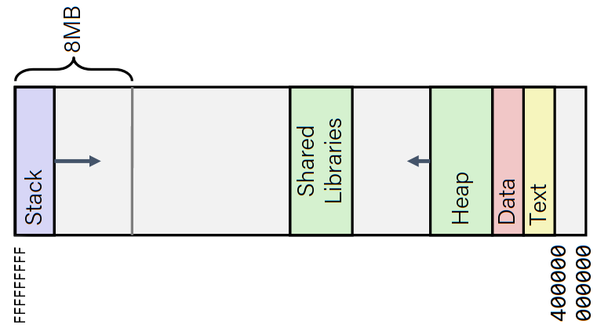
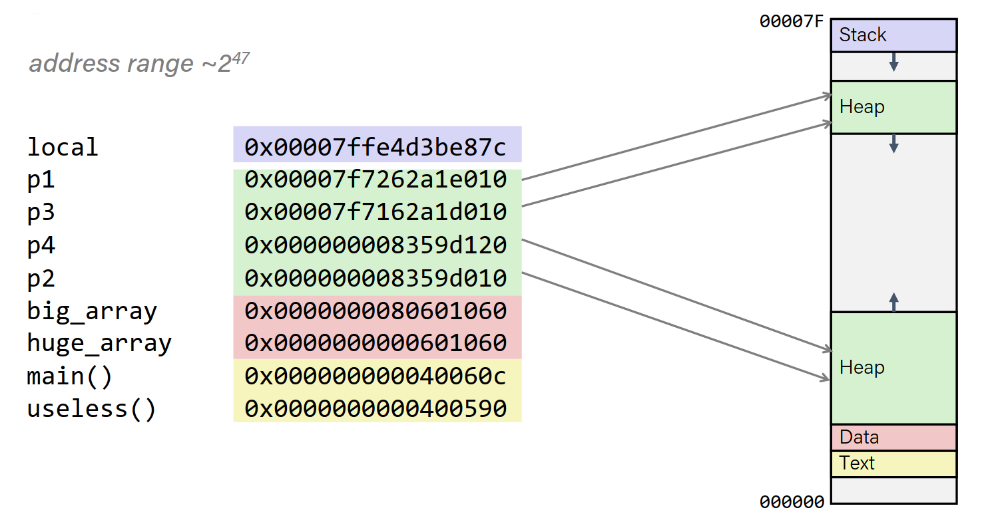
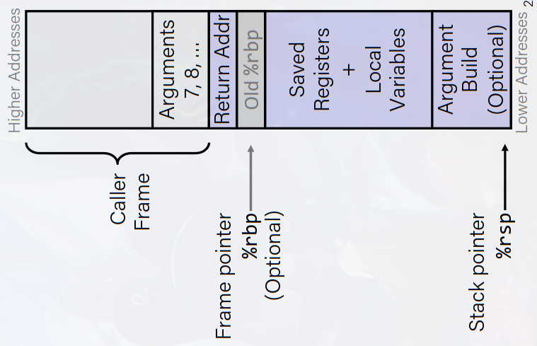
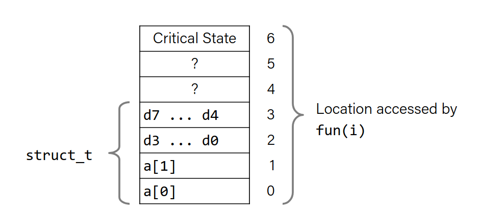
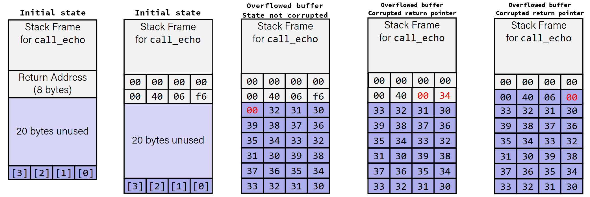

Security vulnerabilities
Back to structs: (last lecture)
When defining structs, to waste less space, define the largest data type first, then the smaller ones. This way, we will have less padding inside the struct.
Floating Point
- We are using SSE3.
- The newest version is AVX that is similar to SSE
In order to deal with floating point numbers, we have 16 more registers each 16 bytes (XMM registers).
You can treat these registers as:
- 16 single byte integers
- 8 16-bit integers
- 4 32-bit integers
- 4 single-presicion floating point numbers
- 2 double-presicion floating point numbers
- 1 single-presicion floating point number
- 2 double-presicion floating point numbers
 |
|---|
XMM registers |
SIMD operations
If we have 4 single-presicion floating point numbers, we can do 4 operations at the same time.
 |
|---|
As seen here, you can do operations on multiple floating point numbers. |
FP basics
- Arguments passed in %xmm0, %xmm1...
- Return resulted in %xmm0
- All xmm registers are caller-saved
float fadd(float x, float y){ return x + y; } double dadd(double x, double y){ return x + y; }
fadd: ;x in %xmm0, y in %xmm1
addss %xmm1, %xmm0
ret
dadd: ;x in %xmm0, y in %xmm1
addsd %xmm1, %xmm0
ret
Note that the last letter in addss and addsd stands for single and double precision.
FP Memory Referencing
- Integer (and pointer) arguments passed in regular registers
- FP arguments passed in %xmm0, %xmm1...
- Different mov instructions to move between xmm registers, and memory to xmm registers
double dincr(double *p, double v) { double x = *p; *p = x + v; return x; }
dincr: ; p in %rdi, v in %xmm0
movapd %xmm0, %xmm1 ; Copy v
movsd (%rdi), %xmm0 ; x = *p
addsd %xmm0, %xmm1 ; t = x + v
movsd %xmm1, (%rdi) ; *p = t
ret
There a lot of different FP operations.
- Comparison:
ucomissanducomisd. These set the condition codes. - To set XMM0 to 0, use:
xorpd %xmm0, %xmm0. To use any other constant value, load from memory.
x86-64 Linux Memory Layout
- Stack (8MB)
- Heap (dynamically allocated)
- Data (statically allocated)
- global variables, static variables, string constants
- Text / Shared Libraries
- Executable instructions
- Read-only

Memory allocation example
char big_array[1L<<24]; /* 16 MB */ char huge_array[1L<<31]; /* 2 GB */ int global = 0; int useless() { return 0; } int main (){ void *p1, *p2, *p3, *p4; int local = 0; p1 = malloc(1L << 28); /* 256 MB */ p2 = malloc(1L << 8); /* 256 B */ p3 = malloc(1L << 32); /* 4 GB */ p4 = malloc(1L << 8); /* 256 B */ /* Some print statements ... */ } //local in stack //p1..p4 in heap //big_array - huge_array in data segment //main and useless in text part

Memory State During a Function Call
During a function call, the stack frame has:
- Caller's stack frame:
- Arguments 7, 8 ..
- Callee's stack frame (current):
- Return address
- pushed by
callinstruction
- pushed by
%rbp-> old frame pointer- This is optional and does not exists for optimization levels > g
- Saved registers and Local variables
- Return address

Buffer Overflow
Memory Referencing Bug Example
typedef struct { int a[2]; double d; } struct_t; double fun(int i) { volatile struct_t s; // volatile keyword prevents compiler from optimizing s.d = 3.14; s.a[i] = 1073741824; /* Possibly out of bounds */ return s.d; }
Sample result (system spesific):
fun(0) → 3.14
fun(1) → 3.14
fun(2) → 3.1399998664856
fun(3) → 2.00000061035156
fun(4) → 3.14
fun(6) → Segmentation fault
Explenation:

Buffer Overflow in a Nutshell
-
C does not check array bounds
- Many Unix/Linux/C functions don't check argument sizes,
- Allows overflowing of buffers
-
"Buffer Overflow": writing past an array
-
Characteristics of the traditional Linux memory layout provide
opportunities for malicious programs- Stack grows “backwards” in memory
- Data and instructions both stored in the same memory
String library code
/* Get string from stdin */ char *gets(char *dest) { int c = getchar(); char *p = dest; while (c != EOF && c != '\n') { *p++ = c; c = getchar(); } *p = '\0'; return dest; }
- No way to limit the number of characters read.
- Similar problem with other library functions.
strcpy,strcatandscanf,fscanf,sscanfwhen given the%sargument are vulnerable to this.
Example:
/* Echo Line */ void echo() { char buf[4]; /* Way too small! */ gets(buf); puts(buf); } void call_echo(){ echo(); }
If you type in more than 4 characters, you will get a segmentation fault.
Disassembly:
echo:
00000000004006cf <echo>:
4006cf: 48 83 ec 18 sub $0x18,%rsp
;open 24 bytes on stack (4 for buf, 20 unused)
4006d3: 48 89 e7 mov %rsp,%rdi
4006d6: e8 a5 ff ff ff callq 400680 <gets>
4006db: 48 89 e7 mov %rsp,%rdi
4006de: e8 3d fe ff ff callq 400520 <puts@plt>
4006e3: 48 83 c4 18 add $0x18,%rsp
4006e7: c3 retq
call_echo:
4006e8: 48 83 ec 08 sub $0x8,%rsp
4006ec: b8 00 00 00 00 mov $0x0,%eax
4006f1: e8 d9 ff ff ff callq 4006cf <echo>
4006f6: 48 83 c4 08 add $0x8,%rsp
4006fa: c3 retq
By overriding stack, we can even change the return address of the function!
|  |
|---|
| Here, in the last scenario, the code might work, but the control might return to another function instead of the caller. |
Why is buffer overflow a problem?
Attackers can overwrite interesting data.
Simplest form (sometimes called "stack smashing")
- Try to change the return address of a function by putting long input inside bounded arrays.
- Change the return address.
Code injection attacks
- Put the code you want to execute inside stack (via input etc).
- Change the return address to the stack address of the code you put in.
Avoiding
-
Use fgets instead of gets strncpy instead of strcpy
-
dont use scanf with %s conversion specifier
- use fgets to read the string
- Or use %ns where n is a suitable integer
-
Randomized stack offsets
-
Non executable code segments
Stack canaries
Place a special value "canary" on stack beyond the buffer, and check it before returning from function.
GCC implementation:
-fstack-protector- Now the default
Something like fs:0x28 (0x28 is the offset of the canary)
Setting up canary
fnc: ... movq %fs:40, %rax ; Get canary movq %rax, 8(%rsp) ; Place on stack xorl %eax, %eax ; Erase canary ...
Checking canary
fnc: ... movq 8(%rsp), %rax ; Retrieve from stack xorq %fs:40, %rax ; Compare to canary je .L6 ; If same, OK call __stack_chk_fail ; FAIL .L6: ...
Return oriented programming attacks
The new protections mentioned above made stack smashing hard.
Hackers can use ROS, but it is much harder.
Constructs programs from gadgets, by using existing code inside the executable part in the memory, we can run our desired code.
By jumping only halfway into an instruction, we can turn it to a new instruction.
This does not overcome stack canaries.
Example
<setval>: 4004d9: c7 07 d4 48 89 c7 movl $0xc78948d4, (%rdi) 4004df: c3 retq
If we know 48 89 c7 is assembled to movq %rax, %rdi, we can use 0x4004dc as our gadget address.